El Ministerio de Asuntos Exteriores del Reino Unido detuvo un avión británico con ayuda humanitaria a Irak momentos antes de despegar , denunció hoy , lunes , el diputado laborista George Galloway.
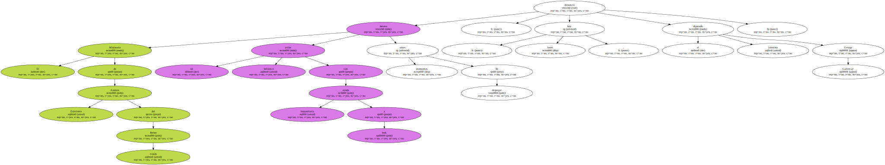El vuelo , que había sido organizado por el diputado Galloway , era el primero de carácter no militar que iba a realizar el trayecto Reino Unido-Bagdad desde que terminó la guerra del Golfo.
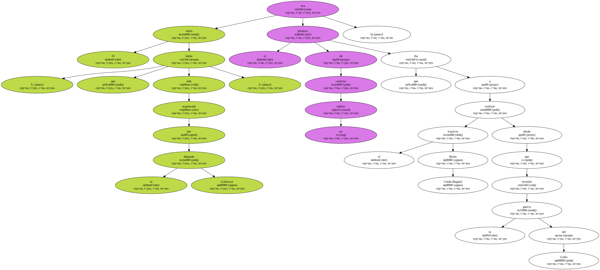Un portavoz del Ministerio explicó que el vuelo fue bloqueado porque pretendía llevar bastantes más pasajeros ( unos 200 ) de los acordados para trayectos de carácter humanitario y el comité de Naciones Unidas no lo permitiría.
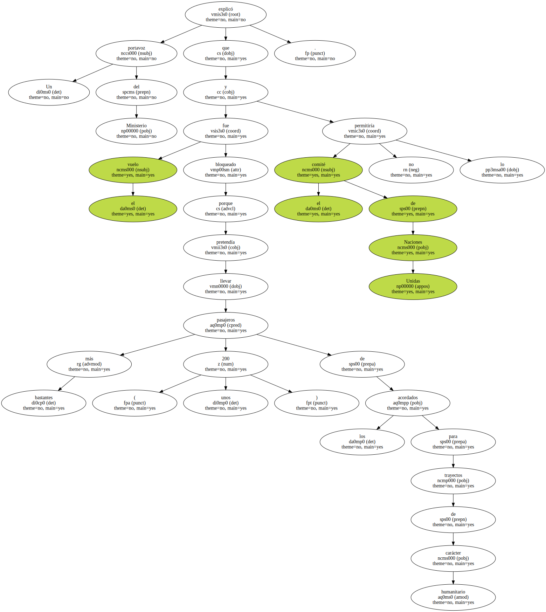Según Galloway , el Ministerio estaba absolutamente informado de su plan de volar a Irak con ayuda humanitaria y no se había opuesto al proyecto.
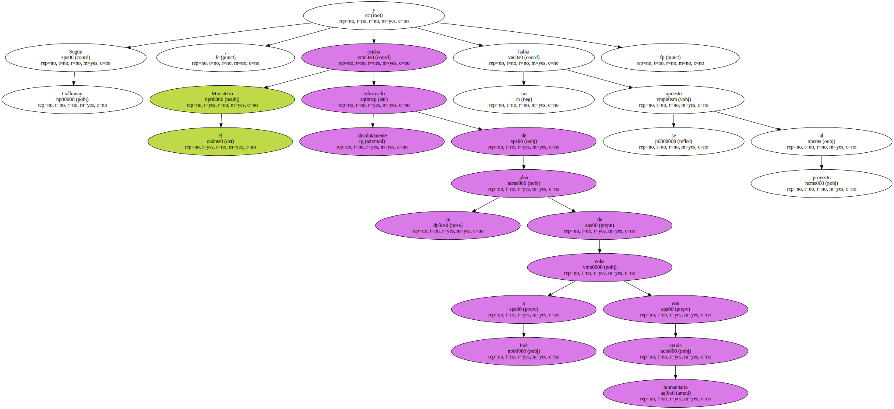Sin embargo , Galloway comentó que sospechaba que " cuando la noticia se hizo pública el jueves , alguien , en algún lugar , quizás con mayor agudeza para las relaciones públicas que el Ministerio , sugirió que la acción aliviaría la política de sanciones contra Irak , que provoca la muerte de 7.000 niños al mes ".
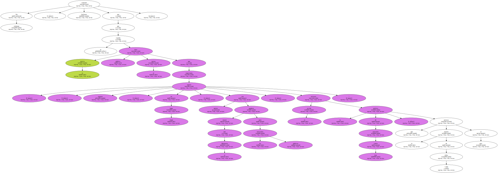Al día siguiente , el viernes , el Ministerio reclamó bajo condiciones completamente arbitrarias , que se redujera el número de pasajeros del vuelo.
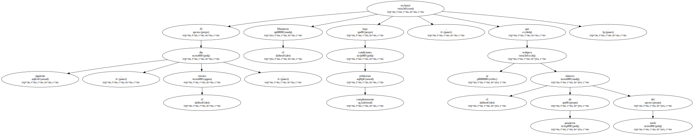Por la tarde , eran sólo entre 20 y 30.

" El sábado por la tarde , 20 " , añadió el diputado.

" Está claro que alguien , en algún lugar , quizás desde el Gobierno , y quizás más humillante , desde otro país , ha dado órdenes al Ministerio y el asunto se ha bloqueado " , explicó.
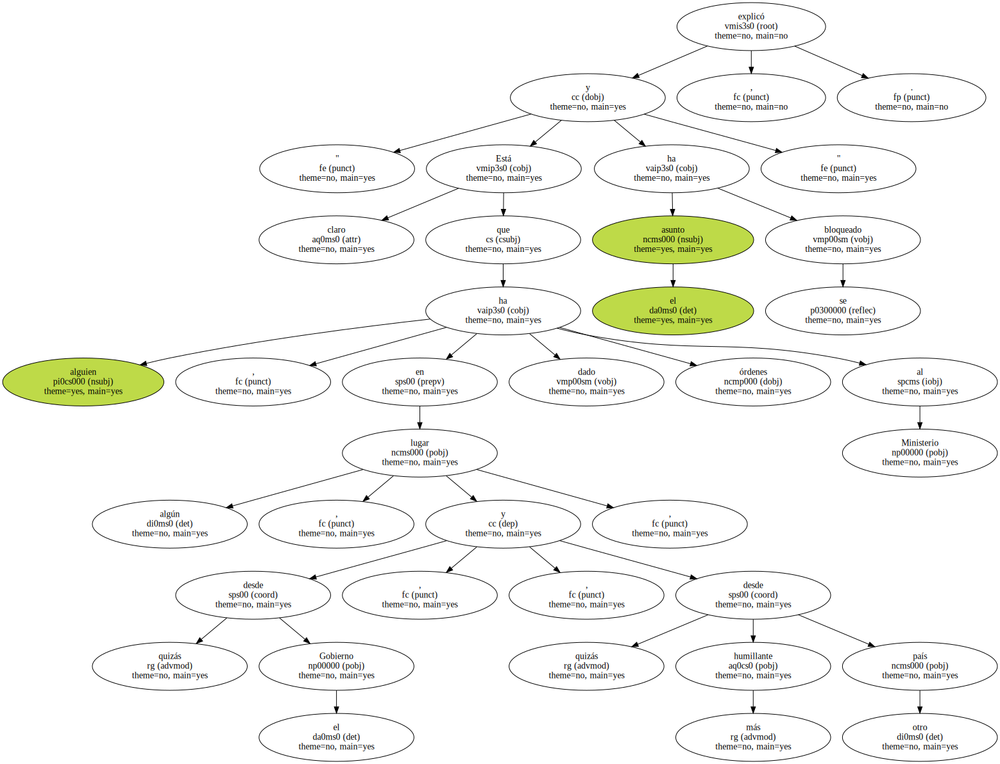Galloway anunció que tomará medidas contra el bloqueo del vuelo , que tenía previsto llevar medicinas , médicos , abogados , psiquiatras y otro personal de ayuda y asistencia a la población.
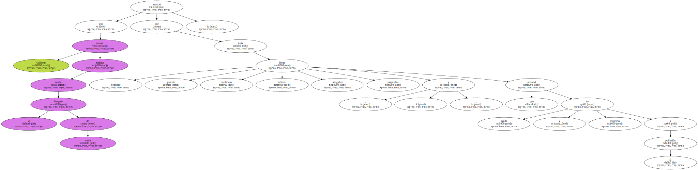" Iremos a los tribunales para insistir en nuestros derechos como ciudadanos británicos para poder volar a Irak . No existen prohibiciones en la resolución de Naciones Unidas para volar a Irak " , aseguró el diputado laborista a Radio 4.
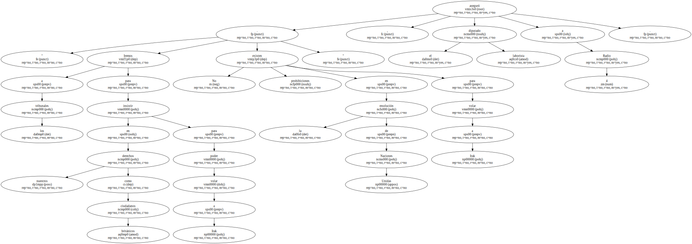El lugarteniente John Nicholl , ex combatiente capturado durante la guerra del Golfo , también pretendía viajar en la nave como acto de reconciliación con sus antiguos enemigos.
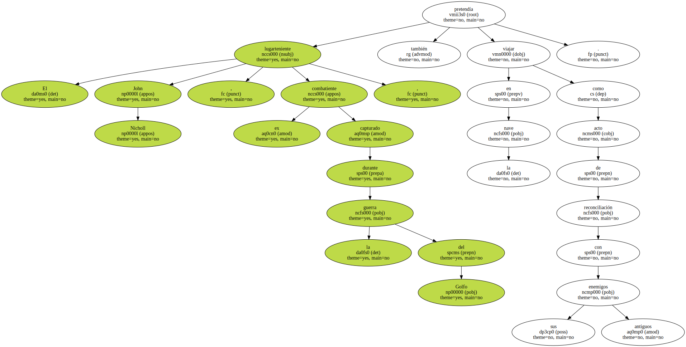También figuraba entre los pasajeros Dennis Halliday , ex vicesecretario general de Naciones Unidas , que renunció a ese cargo en protesta por las sanciones contra Irak , " que están provocando que 7.000 niños mueran al mes " , manifestó Galloway.
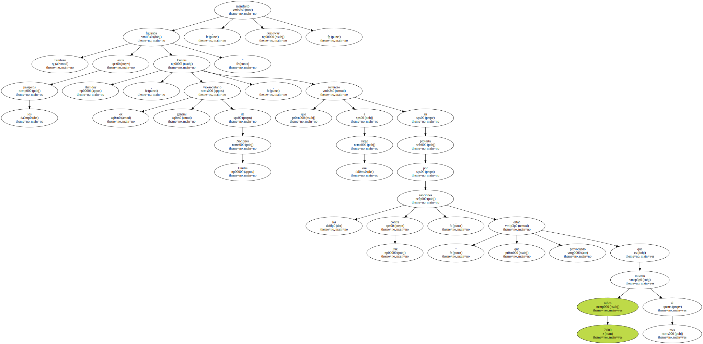